(Head) KO damage duration: 20s > 30s.
(Tail) Bleeding: 1.5x Damage.
(Body) Sharpness return: 15 > 20. Gunner Attack Up: 25 > 50.


Diva Defense Event
Participating in the Diva Defense is very similar to the Hunter Festival. You choose a Prayer Gem and hunt things to get Song Spheres (歌玉) which are used to power up various server wide Prayers. You can select a colour of Prayer Gem to contribute to each day which you will be locked to until noon TW time the following day.
Song Spheres (歌玉) are automatically contributed to whatever Prayer Gem you have chosen for that day. The total amount you contribute will directly affect how much GCP you gain as a result of participation
Actual buffs are only available in the second week!
The total number of times they can be used is based on global server Song Spheres.
When Prayers are maxed out you will be forced to choose another colour locking you from contributing to it!
Each Diva Defense there are up to four different colours of Prayer gems, each of these will have a different effect based on the skills currently assigned to the individual colours.
You select your colour each day by talking to the Blue Guild Girl who handles things such as Arena quests. You can change this colour once a day after 12:00 TW time. Selecting your first colour does not count as changing allowing you to contribute to two different colours on the first day.
There are a number of different possible effects for each of these gems and which is assigned to which colour will change each cycle and should be verified in game.
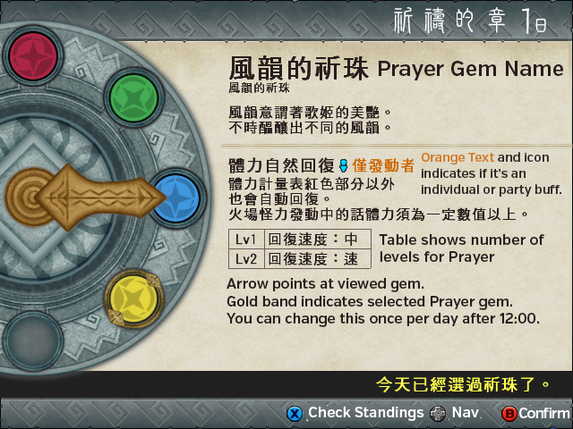| Prayer Gem | Effects |
鏗鏗的祈珠 Ringing Prayer Gem | Adds new items to the GCP store based on level. |
風韻的祈珠 Elegance Prayer Gem | Adds passive HP recovery to all quests. |
萬雷的祈珠 Heavy Thunder Prayer Gem | Elemental damage increases based on level. |
暴風的祈珠 Windstorm Prayer Gem | Sharpness does not decrease with blademaster weapons. Works for 5, 10 or 20 quests depending on level during the prayer active window. |
斬刃的祈珠 Cutting Edge Prayer Gem | Increases the amount of raw damage dealt by a cutting weapon by adjusting hitboxes to be weaker against the damage type. |
變續的祈珠 Status Length Prayer | Increases the duration of status effects on monsters. |
彈起的祈珠 Rising Bullet Prayer Gem | Increases the amount of raw damage dealt by a ranged weapon by adjusting hitboxes to be weaker against the damage type. |
斷力的祈珠 Severing Power Prayer Gem | Tails can be cut with any damage type. |
強擊的祈珠 Powerful Strikes Prayer Gem | Increases affinity of all weapons based on the level of the song. |
歌護的祈珠 Protection Prayer Gem | Gives Divine Protection, Goddess' Embrace or Soul Revival based on level. |
結集的祈珠 Mobilisation Prayer Gem | Attack will go up based on the number of human hunters in a quest. |
不動的祈珠 Unshakable Prayer Gem | Monsters cannot flee if in the same area as a hunter. |
打明的祈珠 Blunt Prayer Gem | Increases the amount of raw damage dealt by an impact weapon by adjusting hitboxes to be weaker against the damage type. |
Each day at some point after 12:00 the most popular prayer is ranked up. This is based on server wide contributions and thus cannot be manipulated to be something based on what you would personally prefer. This naturally also means that the total level of prayers cannot exceed 7. This means that if there are four prayers up each with three levels levels it's very likely that the two most popular ones will get max levels, the third most popular will get a single level and then the least popular will get no levels at all.
To gather Song Spheres you simply need to hunt monsters while breaking their parts. Like Hunter Festival the rewards of every monster is fixed but will vary each time, the rank at which you hunt the various monsters also applies a modifier to the Song Spheres you receive from the hunt for both the Slay and the various Breaks you might make while performing it.
| Monster Rank | Multiplier |
| HR1-2 | 0.125x normal Song Spheres. |
| HR3-4 | 0.25x normal Song Spheres. |
| HR5 | 0.50x normal Song Spheres. |
| HR6 | 0.75x normal Song Spheres. |
| GR | 2.00x normal Song Spheres. |
Actual Song Spheres contributed can be viewed on Post Quest Screens (Second section, final page), in the menus in town (狀態 > 狩衛戰狀態) along with on the standard Blue NPC.
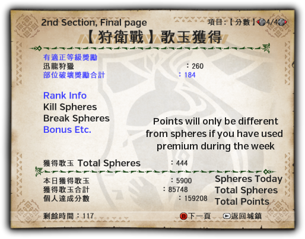
Like Festival there are also items available to increase the number of Song Spheres gained per hunt. Simply have one of these items in your inventory when you clear a quest and you'll be given a flat amount of additional souls.
| Item Name | Effect |
祈禱勾玉【鳴】 Prayer Jewel [Ringing] |
Grants 200 additional Song Spheres when taken on any hunt. |
祈禱勾玉【奏】 Prayer Jewel [Music] |
Grants 500 additional Song Spheres when taken on any hunt. |
祈禱勾玉【響】 Prayer Jewel [Sound] |
Grants 1200 additional Song Spheres when taken on any hunt. |
Whenever you break something on a Monster you are fighting you gain extra points, each break has a fixed initial value and then they will increase by 0.10x that value for all subsequent breaks. The default amount for a break is 20 Spheres. This means in a G Rank quest breaks are worth 40 Song Spheres. For three breaks the first break would give 40, the second 44 and the third would give 48 for a total of 132 additional Song Spheres.
Each day within certain windows Monsters, Quests, Locations and Day or Night Quests can all be set to give extra Song Spheres, these can be confirmed on the Blue Guild NPC. The monsters will change daily and will typically grant at least triple the number Song Spheres they normally would and have windows that last four hours.
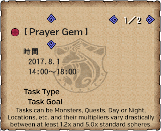
Unlike secret quests these quests are based on return time, this means if they end at 16:00 and take a quest at 15:59 you will get no bonus if you return after 16:00.
You will likely need to claim reward types more than once to get all rewards!
They are limited to 33 items at the same time, so if you had 60 you'd need to do it twice and so on.
The main rewards for Diva Defense are based upon both your personal and guild's contributions to the event. Contributions are measured in both raw Song Spheres and Score. Score gain is doubled while on Premium Course and as such is separate from the actual Song Spheres.
During the Prayer Chapter you can only claim Milestone and Daily rewards.
There are Personal Milestone and Daily Rewards during the Prayer Chapter.
Just like most events you gain rewards based upon your total contribution or amount grinded. This the major source of Mirage Powders (海市蜃樓的金剛砂) since the dissolution of the Caravan Festival as well as all itmes related to the Diva Defense event itself.
These rewards can include the materials to make the various Prayer Weapons as well as fixed amount of GCP and the various items unique to the Caravan Festival and Diva Defense events.
Daily rewards can be claimed on every character on your account! This means that every cycle you can get up to three of whatever is included in the Daily cycle, including Diva and Prayer Weapon Gems! This obviously also requires additional character slots.
For every day you contribute points you will be awarded a set of Daily Rewards. You will receive a notice in chat as you complete them. These do not change daily but rather are 7 different rewards, if you want to get the final reward you will need to contribute some amount of Soul Spheres every day.
These rewards can include materials such as those for Caravan related equipment and those for the Diva Weapons which are completely unavailable outside of the Diva questline and from these rewards.
Based upon the total accumulated Soul Spheres for the various colours from the previous week you can activate Prayers during the Song of War Chapter. The total number of times you can use these buffs will vary based upon the total Spheres gathered by the server.
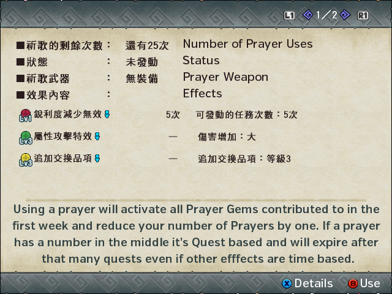
All effects contributed to will be active at whichever levels they reached across the server as soon as you activate the prayer and you will have 60 minutes in which you can utilise them and the associated Prayer Weapon Buffs detailed further down this page. After activating a buff the Diva Defense Event Icon will start to pulse and have a timer added above it.
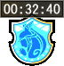
When this timer expires you will lose all effects of the Prayers and any Prayer Weapon you might be using will revert to its default form without any of the additional skills or sharpness.
During the Song of War Chapter you can claim any unclaimed Milestone and Daily rewards as well as use the GCP shop.
Self-explanatory, you will gain rewards directly related to your total score contribution on the server.
Self-explanatory, you will gain rewards directly related to your Guild's total score contribution on the server.
This has never worked for me as of the 3rd Diva Defense, the option is meant to give GCP based directly on your Personal Score.
There are two different types of GCP store available, the standard one which can also be accessed in the Blacksmith and on the Pink Store NPC and the Diva one, which is only available based on the level of the Ringing Prayer Gem and will only be accessible if you have contributed to its colour and while it is one of the actually available Prayer Gems.
Store items include those from discontinued events and things like HC and GHC carves.
The Convert Items option is identical to the other NPCs and allows you to convert GP tickets, Shiten Tickets and Gou Tickets into points if you have them.
GCP skills are very similar in function to the other additional sources of skills such as Guild Food or Exotic Armours in that they do not consume any of your maximum number of skill slots, you simply buy the skill you want to use and you will have it available for a certain number of quests depending on the quantity purchased.
It is important to know that in most cases you can only queue up one skill type. If you were to buy 10 uses of Lone Wolf and then one of Focus+2, you would lose all of your uses of Lone Wolf.
Like many things (Carving Talismans, Lucky Bags, etc.) these skills are only consumed if you finish the quest. If you buy 10 uses of Lone Wolf and then abandon on the quest you will not lose a use of the skill.
| Diva Defense #0 GCP Skills | |
| Skill | GCP Cost |
高速剝取＆採集 High Speed Gathering | 30 |
武器技術 Weapon Handling | 60 |
集中+2 Focus+2 | 60 |
獵人享受 Hunter Valhalla | 30 |
救援 Relief | 30 |
體力回復道具強化 Recovery Items Improved | 30 |
飢餓無效 Hunger Negated | 60 |
砥匠 Sharpening Artisan | 60 |
傷害回復速度+2 Recovery Speed+2 | 60 |
| Level 1 Required | |
狀態異常無效 Status Immunity | 80 |
餓狼+2 Starving Wolf+2 | 80 |
堅如磐石 Impertuable | 80 |
調合師+3 Combination Expert+3 | 80 |
快吃 Speed Eating | 80 |
超強毅力 True Guts | 80 |
| Level 2 Required | |
一匹狼 Lone Wolf | 100 |
吸血+2 Vampirism+2 | 100 |
迴避距離UP Evade Distance UP | 100 |
巧流 Stylish | 100 |
狀態異常無效【多種】 Status Immunity [Myriad] | 100 |
幸運 Good Luck | 200 |
| Level 3 Required | |
真打+3 Edgemaster+3 | 100 |
激運 Great Luck | 500 |
激勵+2 Encourage+2 | 500 |
迴避性能+2 Evasion+2 | 100 |
Some skills such as Focus+2 will usually always be available as the Level 0 skills do not actually require you to have a Prayer active or even to have contributed.
Being on a Premium Course during the Song of War Week grants the buffs below!
This makes them ideal for grinding Hiden and just generally makes Prayer Weapons the overall best choice of weapons to use while on Premium unless you have Raviente ones that eclipse them!
Prayer weapons are made from materials that are given as Daily or Milestone rewards, they are incredibly easy to get the materials for and are very similar to a lower end Level 50 G Rank Weapon.
All Prayer Weapons have a consistent visual theme and start with the character 歌 so simply look for that. There is also a gallery of the weapons with names and mats on the official Diva Defense site.
Weapons with only G weapons (Switch Axe F, Tonfa) start completely maxed while other weapons start at Low Rank (normal HR crafting section) and need to be upgraded to G levels.
With newer runs of the Diva Defense event you will get Prayer Pebbles (祈禱之小石子) instead of the older Prayer Stones, you can simply trade these on the Yellow Guild NPC at the counter with the HR and GR Quest NPCs by using the options 交換道具 > 歌姬狩衛戰.
| Diva Defense Weapons | |||||
| Material | Weapon Type | Weapon Name | Attack | Element | Other Information |
| 祈吟石 | Long Sword | 歌唄之刀【後奏】 | 2520 | 2000 L. Rod | |
| 祈吟石 | Hunting Horn | 歌唄之笛【後奏】 | 2600 | 1600 Music | Purple Blue Red |
| 祈吟石 | Switch Axe | 歌唄之劍斧【獨奏】 | 2835 | 1000 Fire | Power Phial |
| 祈吟石 | Heavy Bowgun | 歌唄之重弩【後奏】 | 726 | Ice S. | N 12/12/12, P 6/0/0 |
| 祈唱石 | Dual Swords | 歌唄之雙劍【後奏】 | 697 | 1500 Wind | |
| 祈唱石 | Hammer | 歌唄之鎚【後奏】 | 2678 | 2400 L. Rod | |
| 祈唱石 | Gunlance | 歌唄之銃槍【後奏】 | 1161 | 1800 Blaze | Lv6 Norm S. |
| 祈唱石 | Bow | 歌唄之弓【後奏】 | 612 | 1000 Music | (1)S3, (2)P3, (3)R4, (4)P4 |
| 祈律石 | Great Sword | 歌唄之大劍【後奏】 | 2520 | 2400 Wind | |
| 祈律石 | Lance | 歌唄之槍【後奏】 | 1173 | 1600 Music | |
| 祈律石 | Tonfa | 歌唄之棍【獨奏】 | 882 | 1600 Blaze | |
| 祈律石 | Light Bowgun | 歌唄之輕弩【後奏】 | 624 | Ice S. | N 9/9/12, P 0/6/6 |
| 祈奏石 | Switch Axe | 歌紡之斧【無華】 | 2889 | - | Power Phial |
| 祈奏石 | Sword & Shield | 歌唄之劍【後奏】 | 756 | 1800 Music | |
| 祈鳴石 | Switch Axe | 歌紡之斧【冰華】 | 2970 | 1200 Ice | Stun Phial |
| 祈響石 | Switch Axe | 歌紡之斧【響華】 | 2889 | 1400 Sound | Ele Phial |
| 祈唄石 | Switch Axe | 歌紡之斧【光華】 | 2889 | 2000 Light | Ele Phial |
| 祈笛石 | Hunting Horn | 歌踊之笛【後奏】 | 2600 | 2400 Blaze | Purple Blue Red |
| 祈音石 | Hammer | 歌踊之鎚【後奏】 | 2600 | 1600 Music | Long Length |
| 祈紋石 | Heavy Bowgun | 歌踊之重弩【後奏】 | 726 | Thunder S. | N 12/0/12, P 0/0/6 |
| 祈樂石 | Dual Swords | 歌踊之雙劍【後奏】 | 697 | 1100 Sound | |
| 祈雅石 | Long Sword | 歌踊之刀【後奏】 | 2520 | 1300 Music | |
| 祈叉石 | Light Bowgun | 歌踊之軽弩【後奏】 | 624 | Tnd S., Dra S. | N 9/9/12, P 6/6/0 |
| 祈節石 | Gunlance | 歌踊之銃槍【後奏】 | 1161 | 1200 Music | Lv6 Norm S. |
| 祈琴石 | Swaxe | 歌踊之劍斧【獨奏】 | 2916 | 1000 Poison | Status Phial |
| 祈演石 | Sword & Shield | 歌踊之劍【前奏】 | 735 | 2800 Blaze | Long Length |
| 祈旋石 | Great Sword | 歌踊之大劍【前奏】 | 2448 | 1900 Sound | Long Length |
| 祈弦石 | Lance | 歌踊之槍【後奏】 | 1138 | 2400 Blaze | Long Length |
| 祈鼓石 | Tonfa | 歌踊之棍【獨奏】 | 882 | 1200 Music | |
| 祈符石 | Bow | 歌唄之弓【後奏】 | 612 | 1500 Blaze | (1)S3, (2)P3, (3)S4, (4)R4 |
| Not available for trade currently | |||||
| 祈曲石 | Dual Swords | 歌舞之雙劍【後奏】 | 714 | 1100 Music | V. Long Length |
| 祈和石 | Lance | 歌舞之槍【後奏】 | 1150 | 1600 Sound | V. Long Length |
| 祈交石 | Long Sword | 歌舞之刀【後奏】 | 2520 | 1300 Sound | V. Long Length |
| 祈聲石 | Hammer | 歌舞之鎚【後奏】 | 2600 | 1600 Sound | V. Long Length |
| 祈吹石 | Sword and Shield | 歌舞之劍【後奏】 | 749 | 1800 Sound | V. Long Length |
| 祈器石 | Great Sword | 歌舞之大劍【後奏】 | 2472 | 1900 Sound | V. Long Length |
| 祈諧石 | Light Bowgun | 歌詠之輕弩【後奏】 | 749 | N 9/9/12, P 6/0/6 | |
| 祈盤石 | Lance | 歌詠之槍【後奏】 | 1184 | 880 Poison | Long Length |
The truly special thing about Prayer weapons is that they gain incredibly strong buffs whenever you have a prayer active potentially pushing them far beyond other weapons if you build around their use. These boosts allow prayer weapons to outstrip a vast majority of the weapons in the game.
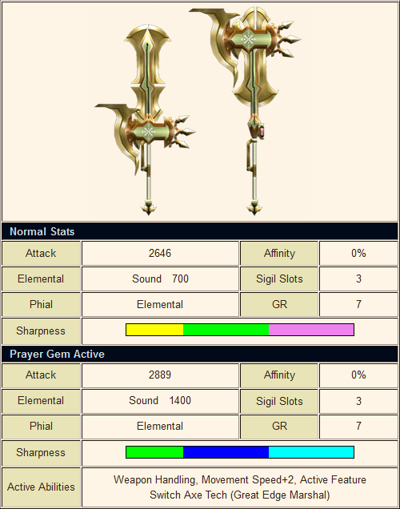
The Prayer buff does the following:
The Dual Hiden is always active during while you have a Prayer effect active allowing you to drop your Hiden gems for specialised sets during small windows or to simply experience Hiden without grinding for it.
As these abilties require you to listen to a Prayer to be active they have a limited duration but you will still likely get at least 3 hours of it daily and utilising them purely during the weekend will most likely have the buffs active for your entire play time.
The various Active Feature effects are listed below.
| Active Feature Effects | |
| Sword and Shield | Status and Elemental attack increased 1.2x. This is internal only and does not change the value on your weapon status. |
| Dual Swords | Stamina and HP consumption lowered (0.5x) in any relevant demon mode. |
| Great Sword | Unsheathe and Parry attacks gain +100% affinity with the additional attack function of Critical Conversion. |
| Long Sword | Full spirit bar buff effect increased (+10 atk > +40 atk) |
| Hammer | Stun damage increased 1.5x, stacks with Sigil or Caravan Skills. |
| Hunting Horn | Song duration 2.0x, stacks with flute expert. |
| Lance | Guard Skill goes up by 1 level. Activates Reflect +3. |
| Gun Lance | Wyvern Fire and Shelling Damage increased 1.5x |
| Tonfas | All Ryuuki finisher (explosion) effects are buffed. (Head) KO damage duration: 20s > 30s. (Tail) Bleeding: 1.5x Damage. (Body) Sharpness return: 15 > 20. Gunner Attack Up: 25 > 50. |
| Switch Axe F | Increases phial meter recovery by primary recovery mechanic (Reloading or Guarding) |
| Light Bowgun | Damage increased at critical distance (+0.1x), status damage 1.2x |
| Heavy Bowgun | Damage increased at critical distance (+0.1x) |
| Bow | Short Charge effect which stacks with Auto-Reload (0.85x) |
The Guild Interception event is an extension of the Diva Defense event and takes place alongside the Song of War Chapter. Functionally, it's just a series of Huntathon quests in the Interception Base map. You will fight a number of monsters in a row based upon pools defined in the quests.
The Event itself is ran by one of Felynes you have to interact with for the Diva Questline, they are next to the Blue NPC who gives you information on the Song of War Chapter.
You take all Guild Interception quests there as well as claim rewards, check status and manage anything else related to the event. As mentioned the quests themselves are simply huntathons that take place in the Interception Base fortress styled map.
Functionally, it's just a series of Huntathon quests, you will fight a number of predefined monsters in a row based upon the pool defined by the quest route taken. Each monster slain can be individually carved and will gradually fade out. There is enough time to carve three times without issue as you can still carve while the fade out animation occurs.
The Diva herself appears at the basecamp, you can give her items which will be returned upon the quest ending.
The actual quests contribute towards claiming grids on a hex board that guilds fight to keep control of from monsters, if you hold more than a certain number of hexes you get access to special functions in the Song Chapter week within your Guild Hall as well as flat material rewards for everyone in the guild based on the hex count.
Most of the menu options are obvious, the Interception NPCs section allows you to hire an additional Hunting Troop NPC who will come on all G Rank Interception Quests. You can customise what weapon class they use and adjust how powerful they are. This costs GCP to alter but is only done once per day. Each hunter present in a quest can have a Hunting Troop with them for a maximum of 4 Hunters and 4 Troops in a quest.
The Interception Board or Map shows you how many hexes your guild has taken, the path that will be taken through the event and when the next update for the board actually is.
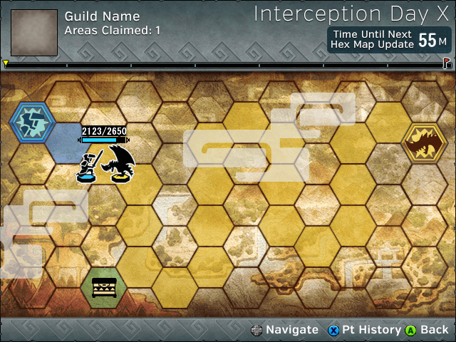
The Branching Path to treasure is a feature added in the Z2 update. When you route past any branching paths that lead to treasure you will get a new type of quest option in the same section as standard quests. Finishing this and getting the points stated in the Board status on that hex will give an additional reward which can include things such as GCP, Guild Hall Cooking materials and Transmog Tickets.
These Bonus Rewards are claimed in the same place you'd claim anything like progression rewards. You have to actually complete the quest in order to claim these rewards and as such it is possible to miss them if serious grind takes place while you are offline and the hex page progresses before you can do the quest.
Interception quests are basically laid out in the exact same way as any other quest on an NPC is. You can clearly see names and icons for any monsters involved and the quests show any needed information such as star rating for defense reduction.
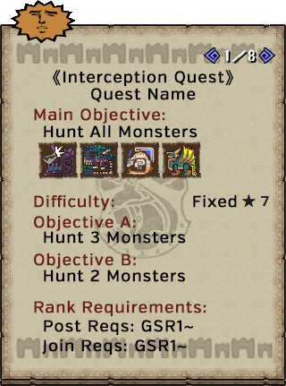
Keoaruboru is a huge Elder Dragon that has urgent interception quests, this is a giant elder dragon that uses the same body structure as Akantor and focuses on fire based attacks. It triggers in a similar manner to Duremudira and requires that you have earned 35,000 points to trigger it or that you get a rather Low% RNG roll.
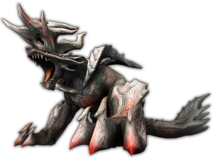
Keoaruboru has breakable parts in its Left Claw, Right Claw, Head, Back and Tail. You should always have a ranged user to focus on the back as all decorations require 5 back breaks to be completed.
Each urgent is cleared on a per person basis allowing you to chain four in a row with four players. A proper hunt with all breaks gives you in the region of 5,000 points meaning you will only need to earn around 15,000 in the gaps between each set of four.
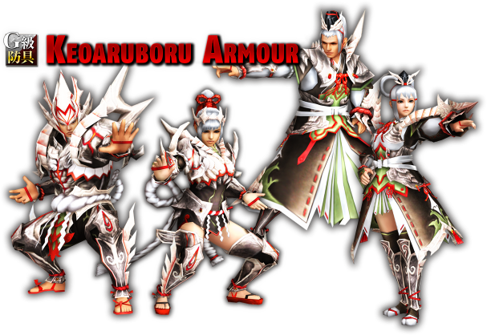
In terms of equipment, Keoaruboru is most notable for his decorations and armour pieces which provide points in the new skill Rush. With Rush active you gain up to 130 attack and the ability to run unsheathed without using stamina simply by sustained attacking or guarding. The armour starts at GX level immediately and only needs common mats for Lv1 but the actual decorations require materials across all the breaks on the monster.
| Decoration Requirements | |
| Material | Quantity |
| 焰嶽龍的厚炭皮 / Keo Charcoal Hide32% Body, 10-12% All Breaks | 18x |
| 焰嶽龍的大堅骨 / Keo Large Bone32% Carve, 8-10% All Breaks | 18x |
| 焰嶽龍的大焰玉 / Keo Large Gem16% Body, 8% Tail | 5x |
| 焰嶽龍的超重尾 / Keo Super Tail80% Tail | 6x |
| 焰嶽龍的高熱液 / Keo Boiling Fluid20% Body, 12% Tail | 9x |
| 焰嶽龍的放熱角 / Keo Burning Horn80% Horn break | 3x |
| 焰嶽龍的大鈍爪 / Keo Large Claw80% Claw Break | 3x |
| 焰嶽龍的異形殼 / Keo Shaped Shell80% Back Break | 5x |
There is some variance to the above table bust it gives you the rough totals you can expect to require. Get every break possible on every Keo you do and you shouldn't have too much trouble completing decorations.
Rewards can be claimed both while the event is ongoing and in the final Greet Song week. As you earn personal score you will unlock Notes, these let you buy special materials limited to the event such as exclusive transmog tickets, premade event decorations and - later - exclusive armour materials. Items cost in the range of 1 to 3 Notes each and the most Notes you can expect to have available to earn is 5, this means getting all of them would allow you to get a full set of transmog materials but for an armour piece that costs 2 tickets you would need to do multiple events to get a full set of armour where each piece needs 2 Notes.
Grouping up with members of your own Guild and using Prayer Weapons multiplies your final Interception points. It is worth noting that despite premium buffing the prayer weapons themselves, you will still need to activate a prayer to get the extra multiplier bonus.
| Guild Member Multipliers | |
| 2 Guild Members | 1.1x |
| 3 Guild Members | 1.3x |
| 4 Guild Members | 1.5x |
| Prayer Multipliers | |
| Prayer Weapon with Prayer active | 1.2x |
| Prayer Weapon without Prayer active | 1.1x |
| Stacked Multipliers | |
| Prayer active, 4 Members | 1.8x |
| Prayer inactive, 4 Members | 1.65x |
Based on the results of the above Interception event (specifically how many Hexes you hold) your Guild Hall can be upgraded with a number of facilities. Most notably is simply that you gain the ability to listen to the Diva Song without using gems and that it is instantly applied to all hunters within the hall at the time and an exchange function to use any notes you earned in the previous week to to get items exclusive to the event.
It is worth noting that you literally cannot use notes without access to the new guild facilities. So if you want the unique items ties to it you should make sure to participate and encourage others to participate in the interception event.
There are minimal new functions while you have the special Guild Hall. The biggest is the new boat with one of the Diva Cats.
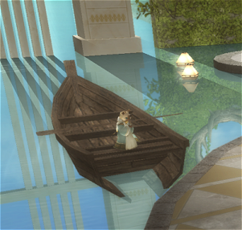
This cat has two abilities:
Listen to Song (聽歌) - The Diva Sings for everyone in the Guild Hall, giving everyone the Diva Buff.
Note Exchange (歌迎特別道具交換) - Allows you to exchange Notes earned in the previous week for items.
Both of these functions are pretty straight forward and if you are playing enough to have earned the notes should not really need guidance on them.
| Note Trade Items | |
| 紺碧劍珠GX1-5 / Konpeki BM Decos | 1 Note |
| 紺碧射珠GX1-5 / Konpeki Gunner Decos | 1 Note |
| 雙舞劍珠GX1-5 / Zeru Unknown Dual Dance BM Decos | 1 Note |
| 雙舞射珠GX1-5 / Zeru Unknown Dual Dance Gunner Decos | 1 Note |
| 雙火龍劍珠GX1-5 / Pink Azure Dual Dance BM Decos | 1 Note |
| 雙火龍射珠GX1-5 / Pink Azure Dual Dance Gunner Decos | 1 Note |
| 雙焰劍珠GX1 / Gold Silver Dual Dance BM Decos | 1 Note |
| 雙焰射珠GX1 / Gold Silver Dual Dance Gunner Decos | 1 Note |
| 虹彩解放券D / No Helmet Transmog (1 Pc) | 1 Notes |
| 收獲解放券D / White Azul Transmog (10 Pcs) | 1 Notes |
| 深黑解放券D / Black Azul Transmog (10 Pcs) | 1 Notes |
| 貓頭猿解放券D / Uruki Robot Helm Transmog (1 Pc) | 1 Notes |
| O角仙解放券D / Male Insect Transmog (5 Pcs) | 1 Notes |
| 燕尾蝶解放券D / Female Insect Transmog (5 Pcs) | 1 Notes |
| 淡櫻解放券D / Kimono Transmog (5 Pcs) | 1 Notes |
| 廚師解放券D / Chef Transmog (3 Pcs) | 1 Notes |
| 松石解放券D / Peach Indian Transmog (5 Pcs) | 1 Notes |
| 雲蓋石解放券D / Pink Indian Transmog (5 Pcs) | 1 Notes |
| 光耀解放券D / White Indian Transmog (5 Pcs) | 1 Notes |
| 追獵解放券D / Giaorugu-esque Transmog (5 Pcs) | 1 Notes |
| 奏審絲綢 / Katante Z Armour Mat | 2 Notes |
| 聖鳴絲綢 / Rikante Z Armour Mat | 2 Notes |
| 輕歌絲綢 / Melente Z Armour Mat | 2 Notes |
| 雅音絲綢 / Utante Z Armour Mat | 2 Notes |
| 悠吟絲綢 / Furante Z Armour Mat | 2 Notes |
Be sure to actually carefully consider and verify what you spend notes on, you cannot get more than a single Decoration or two Z armour pieces each cycle meaning it will be a long time to recover from incorrect purchases.
Other than the items above from the note trade you can also trade a number of new items on the Guild Store cat while the upgraded store is live. These items go straight to your inventory rather than your box making it rather awkward to get large amounts of the items with smaller stacks such as Quick Mega Juices.
| Ticket Trade Items | |
| Gunlance Coolant / 銃槍冷卻劑 | 20 Tix |
| Fire-Resist Drink / 火耐性飲料 | 10 Tix |
| Water-Resist Drink / 水耐性飲料 | 10 Tix |
| Ice-Resist Drink / 冰耐性飲料 | 10 Tix |
| Thunder-Resist Drink / 雷耐性飲料 | 10 Tix |
| Dragon-Resist Drink / 龍耐性飲料 | 10 Tix |
| Move Speed Fruit / 瞬步果實 | 20 Tix |
| Hawkeye Drink / 鷹眼飲料 | 10 Tix |
| Random Ball / 隨機珠 | 10 Tix |
| Terrain Powder / 自然的粉塵 | 30 Tix |
| Quick Potion / 高速回復藥 | 5 Tix |
| Quick Mega Potion / 高速回復藥Ｇ | 15 Tix |
| Quick Mega Juice / 高速強走藥Ｇ | 30 Tix |
Of these items only the Gunlance Coolant and Quick Consumables are actually notable. The other items are either obtainable from simply spending CP or completely worthless in the case of the Resist Drinks (+50 Res for 10 seconds).